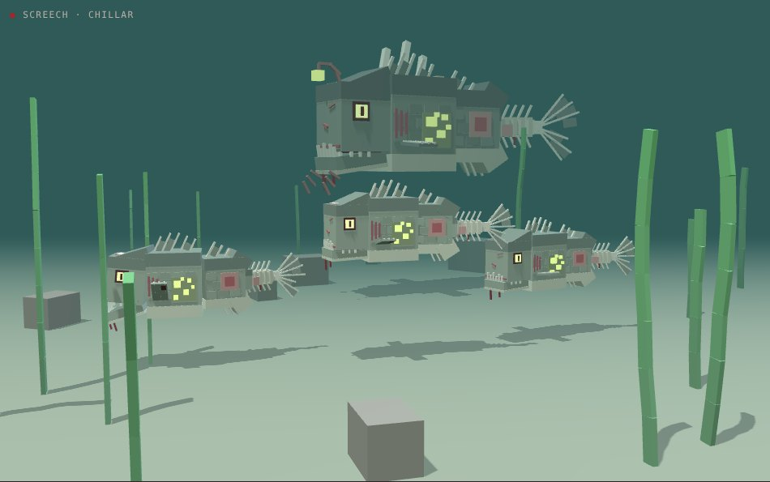

Construido con los mismos planos que usa el instalador de Studio: cada bloque es una Part y cada articulación un Motor6D. Las animaciones son los mismos datos que reproduce Roblox.
FishZone (o en Workspace.FishZones). La cara de arriba de la parte es la superficie del agua. El instalador crea un estanque de prueba con agua de Terrain.roblox/InstallFish.lua en la Command Bar. Construye los dos peces con Parts y un estanque de prueba.FishZone, o déjala en Workspace.FishZones.sounds/*.ogg y pega sus ids en SOUND_IDS.